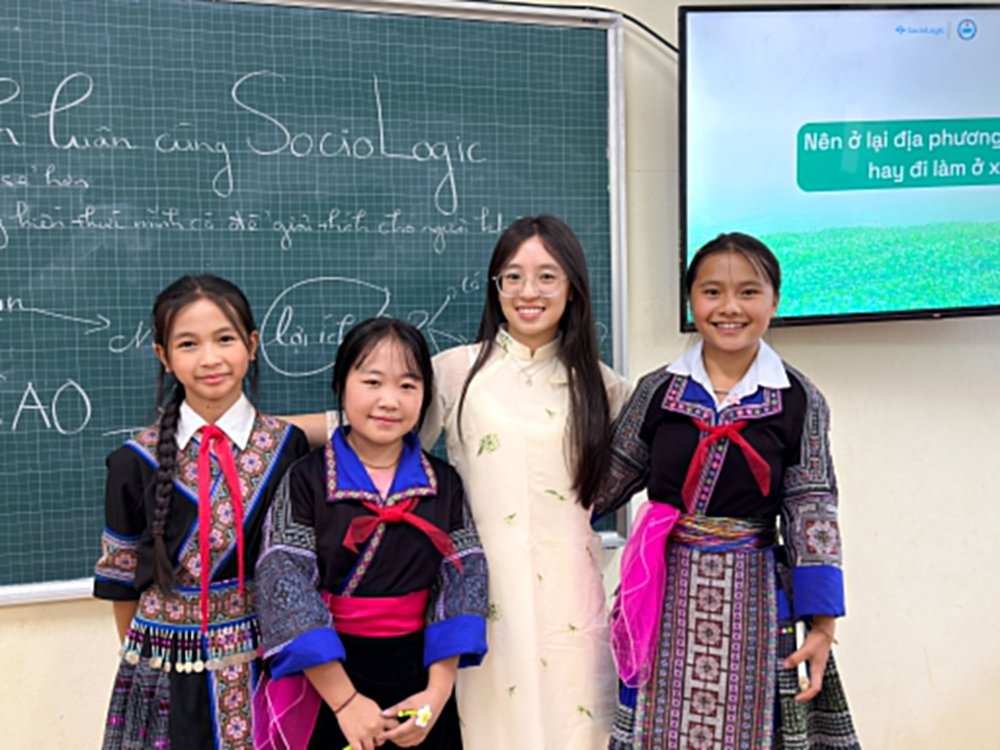

Story 01
Lần đầu mình hiểu rằng lắng nghe cũng là một kỹ năng.
Trước đây, mình nghĩ ai nói nhanh hơn, mạnh hơn sẽ là người thắng trong một cuộc tranh luận. Nhưng ở Hiểu-Chuyện, mentor yêu cầu cả nhóm dành thời gian chỉ để nghe trước khi phản hồi.
Sau vài buổi, mình nhận ra rất nhiều điều mình từng “phản bác” thực ra đến từ việc chưa hiểu hết câu chuyện của người khác. Điều ấy làm mình nghĩ lại cả cách mình nói chuyện với bố mẹ ở nhà.